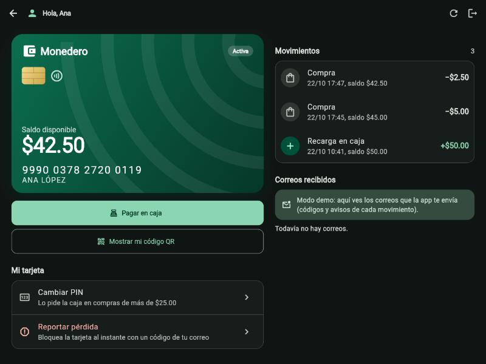
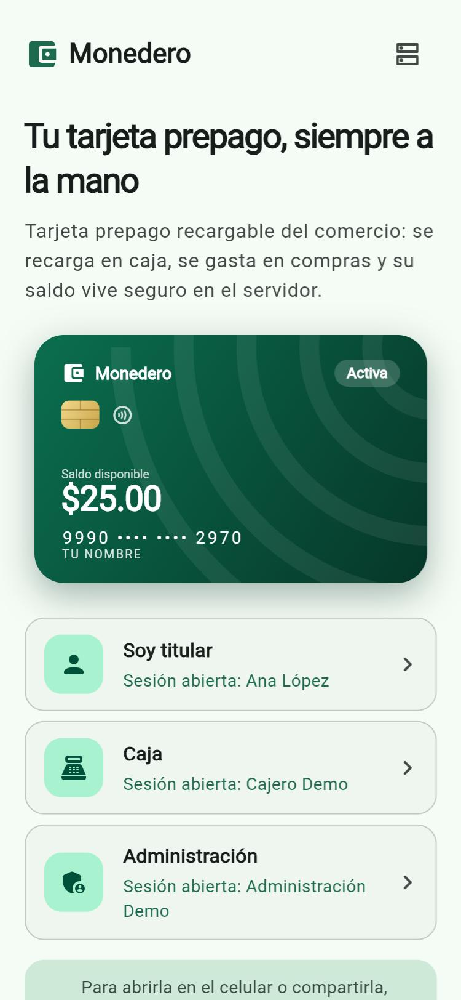
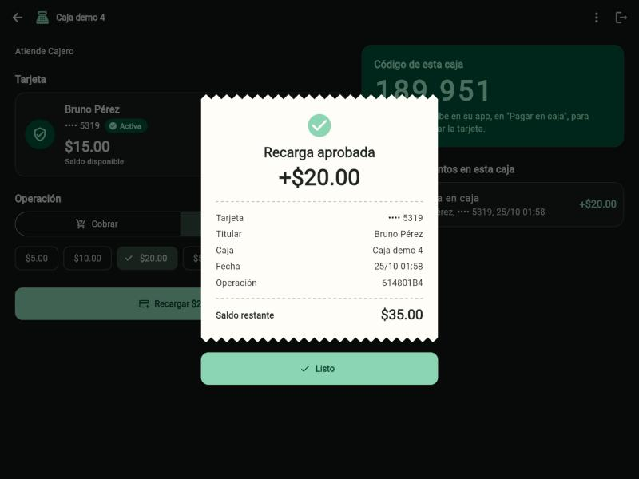
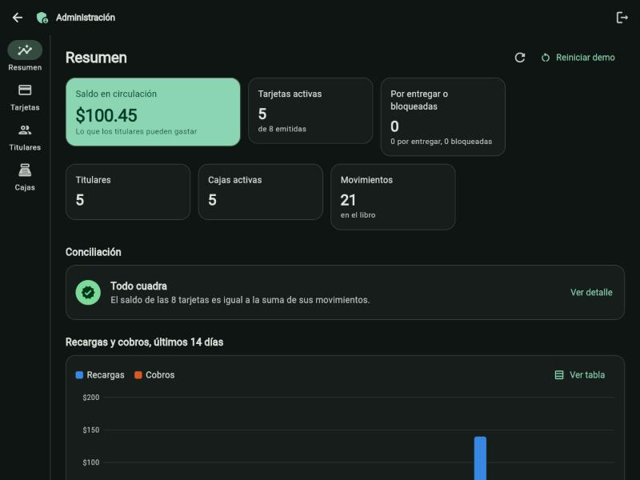

GESTIÓN DE LA CALIDAD DEL SOFTWARE · UFG
Monedero electrónico prepago de circuito cerrado
Este documento resume qué es el proyecto, cómo está construido, cómo funciona el backend y cómo se usa la app en cada rol. Está dividido en tres partes para tres expositores (unos 3 minutos cada una) y termina con la demostración y los próximos pasos.
Avance al 27 de octubre de 2026: fases 1 a 6 terminadas más las observaciones del ingeniero: módulos que se activan y desactivan desde el sistema (con un asistente virtual), y un sistema sin datos de prueba: una sola cuenta de administración, cajas que entran con su código y titulares que se registran. La app funciona de punta a punta en web y Android, y el ingeniero la prueba desde su celular con un link.
| Parte | Tema |
|---|---|
| 1 | El proyecto, el stack y cómo se trabajó |
| 2 | El backend: API, reglas del dinero, módulos, seguridad y pruebas |
| 3 | La app en los tres roles, la demostración y los próximos pasos |
Repositorio: github.com/dn223/Monedero · El link se genera el día de la exposición con dart run tool/share.dart.
Expositor 1 · ≈ 3 minutos
Una tarjeta prepago como la de un supermercado: se recarga en caja y se gasta solo dentro del comercio (circuito cerrado). Cada tarjeta tiene un número único de 16 dígitos y un saldo. Aunque es académico, se diseñó como si manejara dinero real: no se puede perder ni duplicar un centavo.
| Parte | Tecnología | Para qué |
|---|---|---|
| App | Flutter (Dart), Material 3, Riverpod, go_router | Una sola app: APK de Android y web instalable |
| API | Dart con shelf | Aplica las reglas y la seguridad; también sirve la app web |
| Base de datos | PostgreSQL 17 | Única fuente de verdad del saldo |
| Código compartido | Paquete core en Dart | App y API validan igual |
| Entorno local | Docker Compose y Mailpit | Todo corre en la laptop con un comando, a costo $0 |
| Exposición por link nuevo | Túnel de Cloudflare dentro de Docker | Un link https temporal, gratis y sin cuentas, para probar desde cualquier lugar |
| Producción (diseñada) | VPS Contabo, Caddy, pgBackRest a Backblaze B2 | HTTPS y respaldos continuos |
| Tarjetas | Lista o número hoy · NFC MIFARE Classic en la Fase 7 | Leer número, UID y firma |
La app nunca decide el saldo: envía cada operación a la API, que revisa las reglas, y PostgreSQL guarda el resultado y se protege a sí misma. Para la exposición, la misma laptop abre un túnel: el ingeniero entra por el link y la app y la API llegan por el mismo origen.
Expositor 2 · ≈ 3 minutos
La caja envía el cobro con una clave de idempotencia. La API valida el rol, la caja autorizada, la firma de la tarjeta y el monto. Dentro de una sola transacción, bloquea la tarjeta (SELECT … FOR UPDATE), revisa el saldo, lo actualiza y registra el movimiento. Si la red falla y la caja reintenta con la misma clave, recibe el mismo comprobante sin cobrar dos veces. El pago que hace el titular desde su celular con el código de la caja pasa exactamente por el mismo camino.
| Rol | Operaciones |
|---|---|
| Público | Registro del titular, verificación del correo con código, inicio de sesión, apertura de la caja con su código, renovación y cierre de sesión, lista de módulos |
| Titular | Mis tarjetas, historial, pagar en caja con el código de 6 dígitos, reportar pérdida con código, cambiar PIN, asistente |
| Caja | Leer tarjeta, recargar y cobrar (con credencial de la caja), su código de caja y sus últimos movimientos |
| Administración | Tablero de indicadores, emitir y entregar tarjetas, reponer, buscar, conciliación, crear y revocar cajas, encender y apagar módulos |
Desde Administración → Módulos se activa o desactiva cada parte de la app, al instante y para todos. El backend lo hace cumplir: con un módulo apagado la app oculta el botón y la API rechaza la operación (MODULE_DISABLED) aunque alguien la llame directamente. Cada cambio queda registrado con quién y cuándo.
| Módulo | Si se apaga… |
|---|---|
| Asistente virtual | Desaparece el botón "Asistente" y la API no responde preguntas |
| Registro de titulares | Nadie nuevo puede crear cuenta |
| Pago con código de caja | El titular ya no paga desde el celular; solo en caja |
| QR de la tarjeta | La API deja de enviar los datos que forman el QR |
| Cambio de PIN | El titular no puede cambiar su PIN desde la app |
Recargas, cobros, reporte de pérdida y reposición no se pueden apagar: protegen el dinero.
Cómo funciona el asistente: el titular escribe una pregunta; la API revisa que el módulo esté activo, limpia el texto y busca palabras clave para saber de qué trata (saldo, movimientos, recargar, pagar, PIN, pérdida…); luego lee los datos reales del titular y responde con ellos ("Tu saldo es $12.65") con tres preguntas sugeridas. Funciona por reglas: sin inteligencia artificial externa, sin costo, sin enviar datos a terceros y sin guardar las conversaciones.
83 pruebas automáticas en verde (29 del paquete compartido, 46 de la API y 8 de la app). Las 5 obligatorias corren contra PostgreSQL real:
Además hay pruebas de los módulos (cada módulo apagado cierra su ruta), el asistente, la caja con código (entra, cobra y deja de entrar al revocarla), la renovación de sesión, el límite de solicitudes y los flujos de la app.
Expositor 3 · ≈ 3 minutos
Una sola app con tema claro y oscuro que ahora trabaja con datos reales de la API, en la web y en el celular. Cada rol entra a su manera (titular con su cuenta, caja con su código, administración con su cuenta); en un mismo navegador pueden convivir las tres pestañas.




dart run tool/share.dart: levanta todo e imprime un link https://….trycloudflare.com con su QR. El ingeniero lo abre en su celular, se registra como titular y administración le emite la tarjeta en vivo. Para Mailpit, en la laptop: http://localhost:8025.
| Paso | Dónde | Resultado |
|---|---|---|
| 1. Crear la caja | Administración → Cajas → Nueva caja | Código de la caja (anotarlo) |
| 2. Abrir la caja | Caja → escribir el código | Caja lista, con su código de 6 dígitos |
| 3. Registrar un titular | Celular → Titular → Créala (el código aparece en pantalla) | Cuenta verificada |
| 4. Emitir la tarjeta | Administración → Titulares → Emitir → Entregar | La tarjeta aparece sola en el celular |
| 5. Recargar $50 | Caja → Elegir tarjeta de la lista → Recargar | Ticket, saldo $50.00 y correo del aviso |
| 6. Cobrar $7.35 y $26 | Caja → Cobrar (el de $26 pide el PIN) | Saldo $16.65 |
| 7. Sobregiro de $20 | Caja → Cobrar | "Saldo insuficiente"; saldo intacto |
| 8. Pagar desde el celular | Titular → Pagar en caja con el código de la caja | Pago aprobado al instante |
| 9. Módulos | Administración → Módulos: activar el asistente, preguntar "¿Cuál es mi saldo?", volver a apagarlo | El backend activa y bloquea la función |
| 10. Pérdida y reposición | Titular → Reportar pérdida; Administración → Tarjetas → Reponer | Bloqueada al instante; tarjeta nueva con el mismo saldo |
| 11. Conciliación | Administración → Resumen | "Todo cuadra": diferencia $0.00 |
| Rol | Cómo entra |
|---|---|
| Administración | admin@monedero.local · contraseña en ADMIN_PASSWORD del archivo .env |
| Caja | El código que genera Administración → Cajas |
| Titular | Se registra en la app |
| Fase | Contenido | Estado |
|---|---|---|
| 1–2 | Estructura, base de datos, API y pruebas obligatorias | Terminada |
| 3 | Vistas de diseño de los tres roles | Terminada |
| 4 | Titular y caja conectados a la API: inicio de sesión, saldo real, QR real, lector de tarjetas, cobro, recarga y pago con código | Terminada |
| 5 | Administración conectada, renovación de sesión y límite de solicitudes | Terminada |
| 6 | APK de Android firmado con ícono propio, web instalable y link público para la exposición | Terminada |
| Obs. | Observaciones del ingeniero: módulos con asistente, sistema sin datos de prueba y caja con código | Terminada |
| 7 | Tarjetas físicas NFC (MIFARE Classic 1K) | Siguiente entrega |
| 8 | Servidor en Contabo con HTTPS y respaldos continuos | Requiere aprobación del equipo (tiene costo) |
Plan de entregas: esta entrega cierra las fases 1 a 6 y las observaciones recibidas; la siguiente trae la Fase 7 (tarjetas NFC); la entrega final incorpora las nuevas observaciones del ingeniero y el informe. Queda pendiente elegir el nombre definitivo de la app.